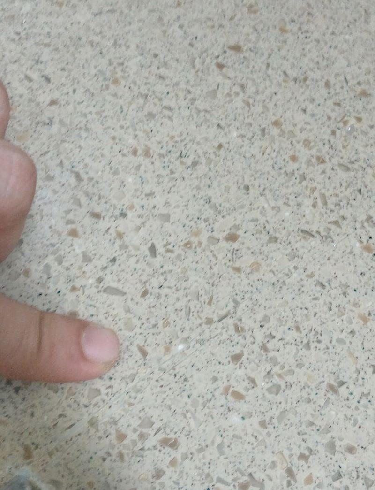
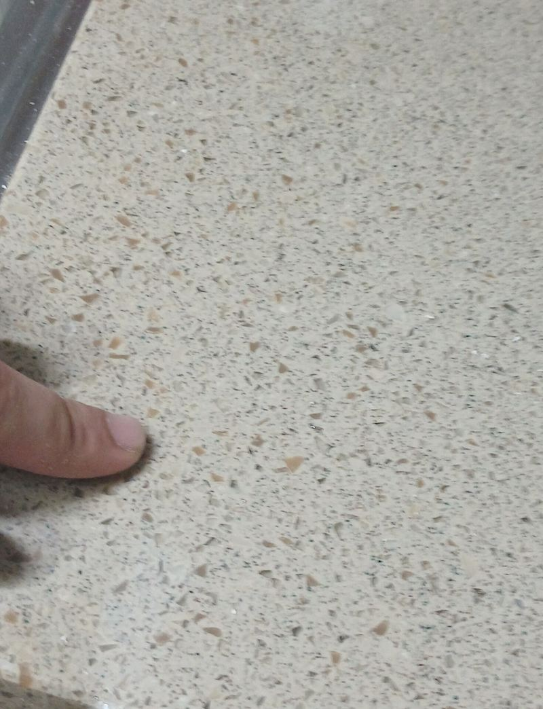
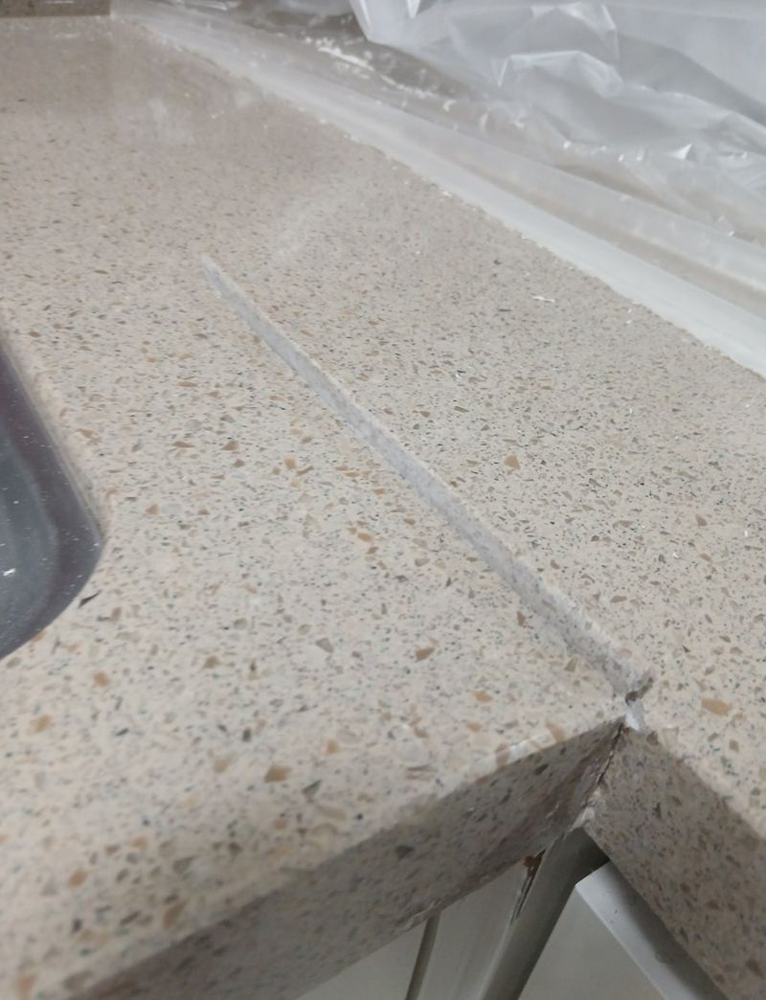
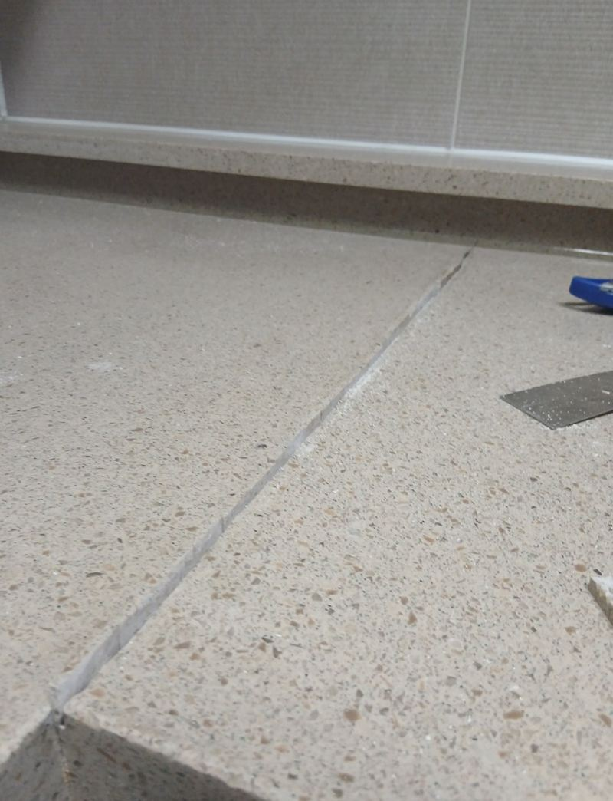
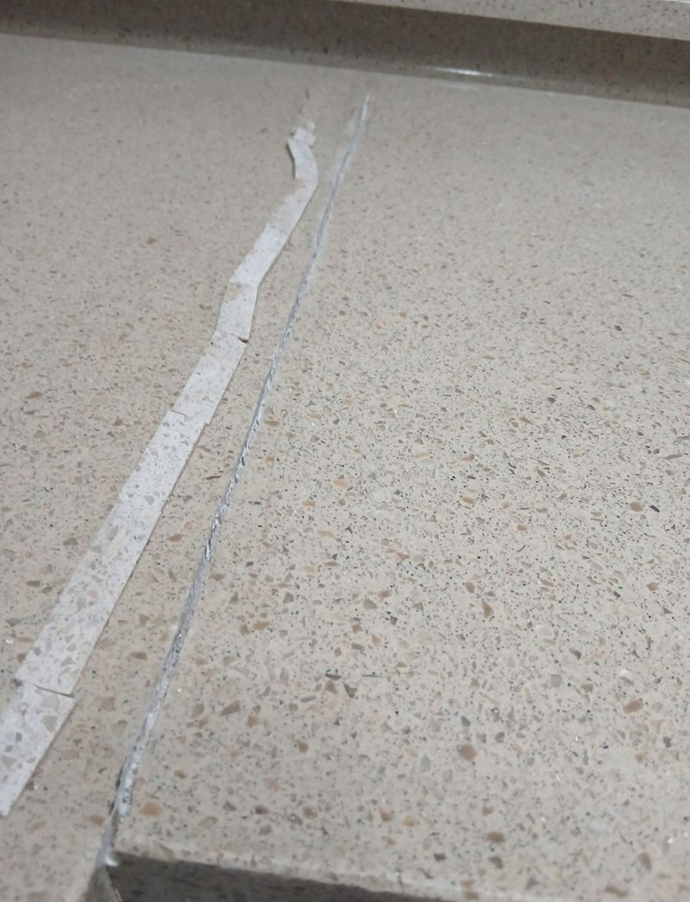
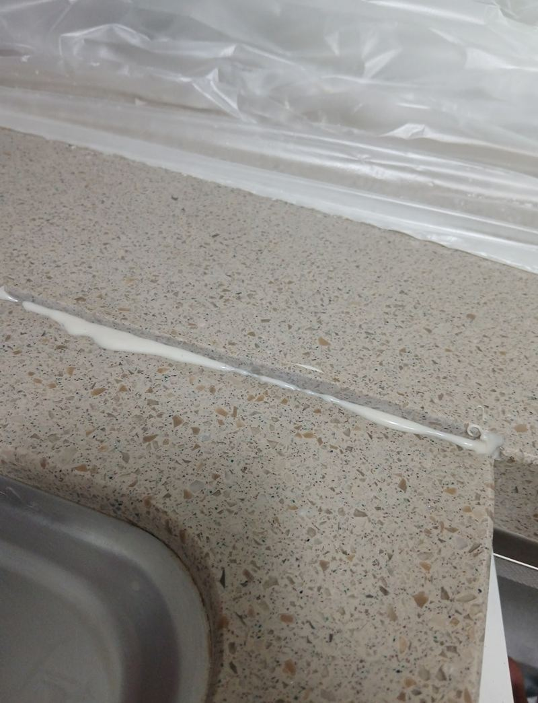
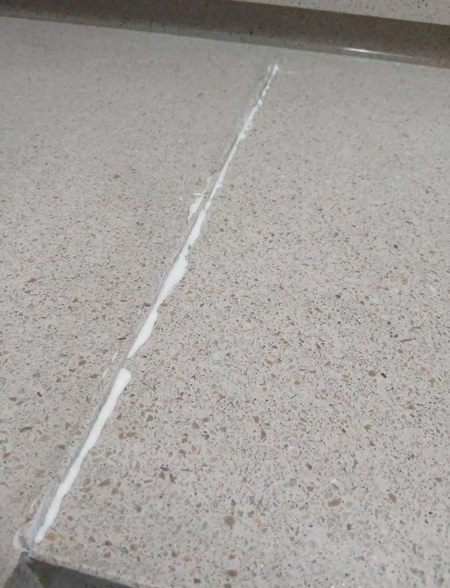

하남 어린이집 싱크대 대리석 깨짐 수리


복원 전복원 후← 밀어서 전후 비교 →
"싱크대 대리석에 금이 가면서 물이 아래로 새고 있어요. 아이들 쓰는 곳이라 급한 대로 실리콘이랑 본드로 막아 뒀는데, 방학 중에 제대로 고칠 수 있을까요?" 하남 미사 쪽 어린이집 조리실이었어요. 흰 상판 위에 노란 본드가 덧발라져 있어 오히려 더 지저분해 보였고, 틈으로 물은 여전히 스며들고 있었어요. 임시로 바른 재료를 모두 걷어 내고, 상판 색에 맞춘 본드로 메운 뒤 아래에 대리석 보강판을 덧대 물길을 막았어요.
| 현장 | 하남 망월동 어린이집 조리실 싱크대 |
|---|---|
| 증상 | 대리석 상판 금, 틈으로 하부장 누수 |
| 먼저 한 처치 | 실리콘·노란 본드로 임시로 막음 → 더 도드라짐 |
| 한 일 | 보양·환기 → 트리머로 잔여물 제거·면 정리 → 색 맞춘 본드 → 하부 보강판 부착 → 마감 |
실리콘으로 막아 두면 안 되는 이유
금이 가면 우선 뭐라도 발라 두고 싶어져요. 그런데 실리콘이나 일반 본드는 대리석과 붙는 힘이 약하고 색도 달라서, 틈은 그대로인데 자국만 커지기 쉬워요. 이 현장도 조리사분이 "흰 상판에 노란 본드를 바르니 더 지저분해 보였다"고 하셨어요.
더 큰 문제는 물이에요. 실금 사이로 스민 물이 하부장으로 내려가면 판재가 붓고, 곰팡이와 냄새가 생겨요. 하부장이 MDF라면 더 빨리 상해요. 아이들 음식을 만드는 공간이라 미루지 않는 게 좋았어요.


대리석 깨짐 복원 순서
보양과 환기
바닥, 가구, 벽을 덮어 가루가 튀지 않게 했어요. 아이들 공간이라 공기도 신경 써서 창을 열고 작업했어요.
트리머로 면 정리
금 간 자리를 트리머로 다듬으며 먼저 발라 둔 실리콘과 본드를 깨끗이 걷었어요. 찌꺼기가 남으면 새 본드가 붙지 않아 다시 갈라져요.


색 맞춘 본드 채우기
상판 색에 맞춘 전용 본드를 고르게 채웠어요.


하부 보강판
상판 아래에 대리석 보강판을 덧대 붙였어요. 물이 아래로 내려가는 길을 막고, 상판이 다시 벌어지지 않게 받쳐 줘요.
복원 자리가 티 나지 않으려면
대리석 복원에서 결과를 가르는 건 색이에요. 메운 재료 색이 상판과 다르면 금이 간 자리가 오히려 줄처럼 도드라져요. 그래서 상판의 바탕색과 알갱이 느낌을 보고 본드 색을 맞춘 뒤 채우고, 표면을 매끄럽게 다듬었어요.
마친 뒤 조리사분은 "물이 계속 새서 급하게 막았는데, 색까지 맞춰 주니 깨졌던 자리가 티가 안 난다"고 하셨고, 원장님은 방학 일정에 맞춰 끝낸 점을 좋아하셨어요.
임시 보수와 제대로 된 복원 비교
| 실리콘·일반 본드로 막기 | 색 맞춘 본드 + 하부 보강 | |
|---|---|---|
| 붙는 힘 | 대리석과 잘 안 붙어 들뜸 | 면을 정리한 뒤 붙여 단단함 |
| 보기 | 색이 달라 자국이 커 보임 | 상판 색에 맞춰 덜 보임 |
| 물 새는 것 | 틈이 남아 계속 스밈 | 위아래로 막아 물길 차단 |
어린이집·유치원은 방학 때가 좋아요
- 먼지와 냄새다듬고 붙이는 작업이라 아이들이 없을 때 하는 게 마음 편해요.
- 조리실 사용본드가 굳는 동안 물을 쓰지 않아야 해서 급식이 없는 날이 좋아요.
- 미리 예약방학 기간에 맞춰 일정을 먼저 잡아 두세요.
대리석 상판 깨짐 질문
상판 전체를 바꿔야 하나요?
금이 한두 줄이고 상판이 들뜨지 않았다면 복원으로 쓰는 경우가 많아요. 깨진 조각이 떨어졌다면 범위를 따로 봐요.
복원 뒤 바로 물을 써도 되나요?
본드가 굳을 때까지는 물을 피해 주세요. 언제부터 쓰면 되는지 작업 후 알려 드려요.
뜨거운 냄비 자국도 고칠 수 있나요?
그을린 자국은 연마로 옅게 할 수 있어요. 깊이 따라 결과가 달라요.
하부장도 젖었어요.
판재가 부풀었다면 상판 복원과 함께 하부장 상태도 같이 봐요.
유치원·학원도 하나요?
어린이집, 유치원, 학원, 가정집 상판 모두 해요.
금이 가는 원인은 뭔가요?
무거운 냄비를 떨어뜨리거나, 상판 아래 받침이 약해 한쪽으로 힘이 몰리면 잘 생겨요. 그래서 이번처럼 아래 보강을 같이 해요.
다른 상판 복원 현장
금 간 자리와 상판 전체 사진을 보내 주시면 복원 범위를 먼저 봐 드려요.
전화 상담 010-4517-9872